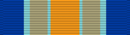

Inherent Resolve Campaign Medal
Service awardIRCM
For service in Iraq or Syria in support of Operation Inherent Resolve, from June 15, 2014.
Check your eligibility and build your ribbon rackHow you get it
You earn this by meeting the requirements. No recommendation is needed. If it's missing from your record, current members can have their MPF add it. Veterans can request it from AFPC with a Standard Form 180 and supporting documents.
You qualify if any of these apply
- Assigned, attached, or detailed for 30 consecutive or nonconsecutive days to a unit operating in Iraq, Syria, or their waters or airspace
- Aircrew who flew into, out of, within, or over Iraq or Syria on 30 days (one day per day flown)
- Engaged in combat during an armed engagement, regardless of time in the area
- Killed, or wounded or injured and medically evacuated from the area, while on official duties
Quick facts
- Category
- Campaign and service
- Type
- Service award
- WAPS points
- 0
- Position in the AFPC listing
- 51 of 91 (listed in order of precedence)
Full AFPC fact sheet text
Background
The Secretary of Defense announced the creation of the Inherent Resolve Campaign Medal. The IRCM provides distinct recognition to those service members who are serving, or have served, in Iraq, Syria, or contiguous waters or airspace on or after June 15, 2014, to a future date to be determined by the Secretary of Defense. Award of the Global War on Terrorism Expeditionary Medal previously authorized to recognize service in Iraq and Syria for Operation Inherent Resolve is hereby terminated.
Criteria
The IRCM shall be awarded to each Service member who, on or after 15 June 2014, was permanently assigned, attached, or detailed for 30 consecutive or non-consecutive days to a unit operating in the area of eligibility, or who meets one of the following criteria regardless of time spent in the AOE:
-Was engaged in combat during an armed engagement
-While participating in an operation or on official duties was killed or wounded/injured and medically evacuated from the AOE
The AOE encompasses the land area of the countries of Iraq and Syria, the contiguous waters of each extending out to 12 nautical miles, and the air space above the land area and contiguous waters. Aircrew members accrue one day of eligibility for each day they fly into, out of, within, or over the AOE. The IRCM is not authorized for foreign military personnel. CAMPAIGNS AND INCLUSIVE DATES
- Operation INHERENT Resolve June 15, 2014 - November 23, 2015
- Abeyance June 15, 2014 - November 24, 2015
- Intensification November 25, 2015 - April 14, 2017
- Defeat April 15, 2017 - July 1, 2020
- Normalize, July 2, 2020 - TBD
Medal description
The decorated star panels are common in the Arabian and Moorish styles of ornament. A scorpion is a symbol for treachery and destructive forces. The eagle is a national emblem and ancient symbol of power and victory. The color combination in the ribbon was inspired by The Ishtar Gate and the color of sand.
A separate bronze campaign star is worn on the IRCM suspension and campaign ribbon to recognize each designated campaign phase in which the member participated for one or more days. A silver campaign star is worn in lieu of five bronze campaign stars. AUTHORIZED DEVICES A separate bronze campaign star is worn on the IRCM suspension and campaign ribbon to recognize each designated campaign phase in which the member participated for one or more days. A silver campaign star is worn in lieu of five bronze campaign stars.
(NOTE: Currently, the IRCM does not reflect appropriately on individual’s vMPF Awards and Decorations Information screen)
Source: Inherent Resolve Campaign Medal fact sheet, Air Force's Personnel Center